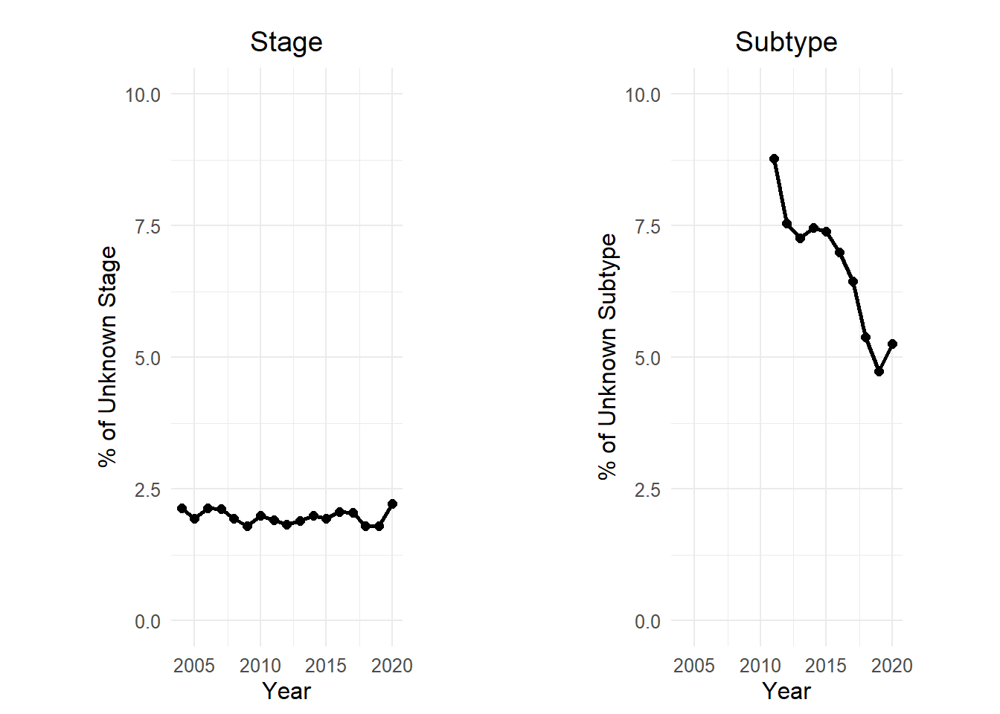
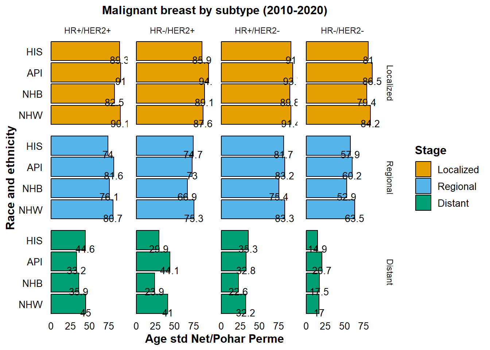
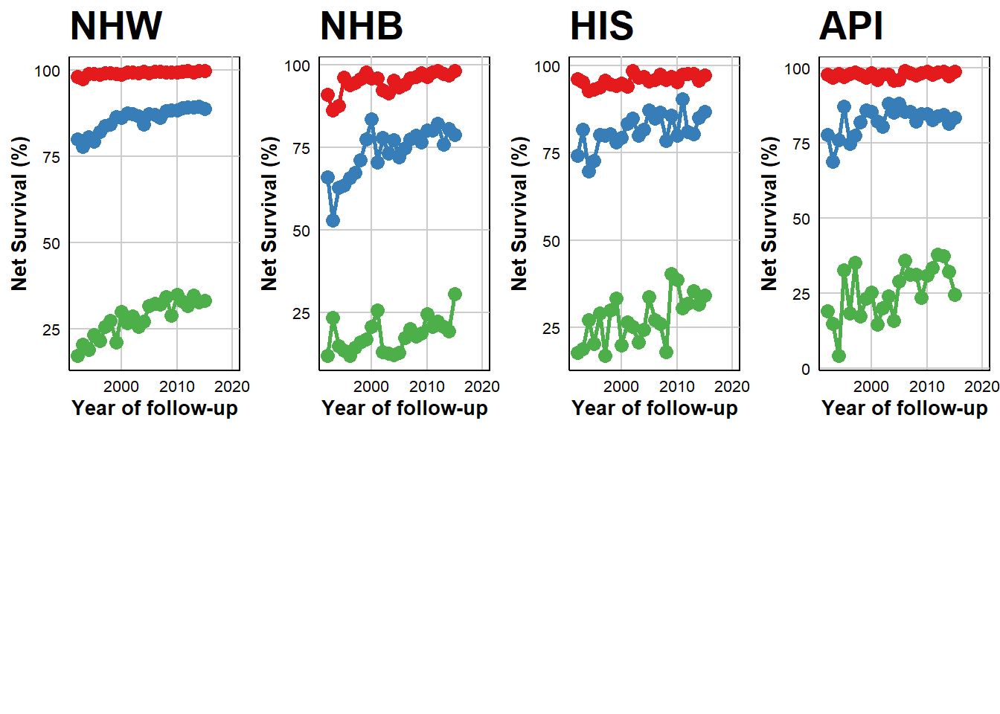
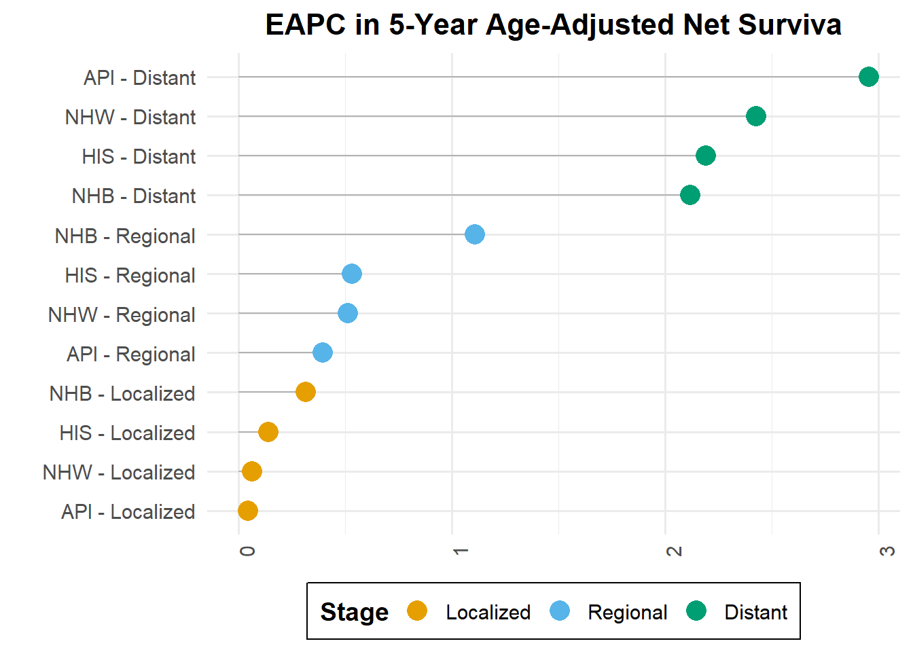

Five-year relative survival for malignant breast cancer in the U.S: A population-based study using SEER 12, 1992–2015
Ratinale
Our main goal is to evaluate the 5-year relative survival for malignant breast cancer by subtype, and investigate the extent to which survival differences among the major racial and ethnic groups have progressed over the span of nearly three decades, from 1992 to 2020.
Methods

Figure A presents the annual proportions of breast cancer cases with unknown ER status. Figure B details the yearly proportions of breast cancers with ER-negative status.”
Total number of cases included 1626352. The first exclusion criterion—applied was the exclusion of death certificate and autopsy cases 14,324 (0.6%). Than, 361,260 cases, representing 22.2% of the selected cases, were excluded for being subsequent primary occurrences (Sequence Number higher than 1) rather than first primary cancer instances. Lastly, 2,734 cases (0.2%) were removed due to being alive with no survival time recorded.
| Number Selected | Number Excluded | Statement | Proportion Excluded |
|---|---|---|---|
| 2323651 | 2918834 | {Age at Diagnosis...} = '35-39 years', '40-44 years'... | 125.6 |
| 2309327 | 14324 | Exclude death certificate or autopsy cases | 0.6 |
| 1990346 | 318981 | Select only malignant cancers | 16.0 |
| 1990346 | 0 | Select only known age | 0.0 |
| 1990346 | 0 | Exclude age values not in table | 0.0 |
| 1990346 | 0 | Exclude Race and origin recode values not in table | 0.0 |
| 1990346 | 0 | Exclude Sex values not in table | 0.0 |
| 1990346 | 0 | Exclude State values not in table | 0.0 |
| 1990346 | 0 | Exclude County values not in table | 0.0 |
| 1629086 | 361260 | First Primary Only (Sequence Number 0 or 1) | 22.2 |
| 1629086 | 0 | Invalid vital status | 0.0 |
| 1629086 | 0 | Unknown survival duration | 0.0 |
| 1629086 | 0 | Calculation dates invalid | 0.0 |
| 1629086 | 0 | Coded survival duration conflicts... | 0.0 |
| 1629086 | 2734 | Alive with no survival time | 0.2 |
| 1626352 | 0 | Cases for which an expected rate could not be found | 0.0 |
Results
Analysis of 5-Year Age-Standardized Net Survival by Breast Cancer Subtype (2010-2020)

Temporal Trends in 5-Year Age-Adjusted Net Survival by Race, Ethnicity, and Cancer Stage
In observing the localized stage across all groups, the data suggests a trend towards stabilization over time. Notably, Non-Hispanic White (NHW), Hispanic (HIS), and Asian or Pacific Islander (API) populations demonstrated a marginal but consistent increase in survival for the regional stage, with rates below 1%. Non-Hispanic Black (NHB) cohort displayed a more pronounced annual improvement of 1.1% from the period between 1992 to 2015. Distant stage revealed significant and increased in survival for NHW (2.4%), NHB (2.1%), HIS (2.9%), and API (2.1%).
- Red: Localized
- Blue: Regional
- Green: Distant

Estimated annual percentage change (EAPC) in 5-year age-adjusted net survival

EAPC with 95 % CI level have been computed| race | stage | apc | eapc_up | eapc_low |
|---|---|---|---|---|
| NHW | Localized | 0.0632228 | 0.6457773 | -0.5159598 |
| NHW | Regional | 0.5099972 | 1.1396866 | -0.1157719 |
| NHW | Distant | 2.4263695 | 3.5584197 | 1.3066943 |
| NHB | Localized | 0.3152329 | 0.9123383 | -0.2783395 |
| NHB | Regional | 1.1070423 | 1.7914545 | 0.4272320 |
| NHB | Distant | 2.1153695 | 3.5258697 | 0.7240868 |
| API | Localized | 0.0414952 | 0.6279400 | -0.5415318 |
| API | Regional | 0.3930158 | 1.0341732 | -0.2440728 |
| API | Distant | 2.9525179 | 4.1502866 | 1.7685239 |
| HIS | Localized | 0.1389664 | 0.7319316 | -0.4505084 |
| HIS | Regional | 0.5295265 | 1.1758132 | -0.1126319 |
| HIS | Distant | 2.1883767 | 3.3310755 | 1.0583146 |
Discussion
Bullet Points
Interestingly, our preliminary analysis of the 5-year relative survival (SEER22) for HR+/HER2- breast cancer suggests much lower survival rates for the NBH population, particularly at the regional and distant stages.
I was speculating whether some of these differences in survival could, in part, reflect variabilities in chemotherapy patterns among populations (as discussed in the article) and also some of the community-level health factors, such as poverty and the socioeconomic status (SES) index.